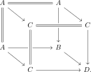

3.1. Truncation
Truncation organizes objects and morphisms according to the amount of homotopical information they contain. The definition is recursive: a morphism is \(n\)-truncated when its diagonal is \((n-1)\)-truncated. We first recall this hierarchy and construct the truncation functors in any presentable category. We then develop the relative truncation calculus needed later, with particular attention to its interaction with base change, monomorphisms, and effective epimorphisms.
Let \(C\) be a category with pullbacks. A morphism \(f\colon X \to Y\) in \(C\) is called \((-2)\)-truncated if it is an isomorphism. For \(n \geq -1\), we say \(f\) is \(n\)-truncated if \(\Delta_f\colon X \to X \times_Y X\) is \((n-1)\)-truncated. We denote by \(C_{\leq n} \subseteq C\) the full subcategory of \(n\)-truncated objects.
If the inclusion \(C_{\leq n} \hookrightarrow C\) admits a left adjoint, we denote this adjoint by
and call it the \(n\)-truncation functor.
Being \((-1)\)-truncated is the same as being a monomorphism.
The truncation functor \(\tau_n\colon C \to C_{\leq n}\) always exists when \(C\) is presentable, hence in particular when \(T\) is a topos.
To see this, recall that \(C\) admits a tensoring and a cotensoring by the category \(\An\). There are unique functors
satisfying \(* \otimes X \cong X \cong X^*\) for all \(X \in C\) and preserving colimits (resp. limits) in the first variable. Here and below we use the convention \(S^{-1} := \emptyset\). Thus, for \(n=-2\), the map below is the terminal map \(X \to X^{\emptyset} \cong *\). By an easy induction argument, an object \(X \in C\) is \(n\)-truncated if and only if the map \(X \to X^{S^{n+1}}\) induced by \(S^{n+1} \to *\) is an isomorphism.
Since \(C\) is presentable, there is a small collection of objects \(\{Y\}\) that detect equivalences. Since \(\Hom_C(Y, X^{S^{n+1}}) \simeq \Hom_C(Y \otimes S^{n+1}, X)\), the \(n\)-truncated objects are precisely the local objects with respect to the small collection of morphisms \(\{S^{n+1} \otimes Y \to * \otimes Y = Y\}\). In particular, the \(n\)-truncated objects form a reflective subcategory of \(C\), admitting a reflector \(\tau_n\colon C \to C_{\leq n}\).
Show that a stable category does not admit any non-zero \(n\)-truncated objects.
We now prove some basic properties of truncated objects.
The \(n\)-truncated morphisms in \(C\) are closed under base change.
Proof
A morphism \(f\colon X \to Y\) is \(n\)-truncated if and only if the induced map of animae \(f_*\colon \Hom_C(Z,X) \to \Hom_C(Z,Y)\) is \(n\)-truncated for all \(Z \in C\).
Proof
Consider morphisms \(f\colon X \to Y\) and \(g\colon Y \to Z\).
If \(g\) is \(n\)-truncated, then \(f\) is \(n\)-truncated if and only if \(gf\) is \(n\)-truncated.
If \(gf\) is \(n\)-truncated and \(g\) is \((n+1)\)-truncated, then \(f\) is \(n\)-truncated.
Proof
Consider a functor \(F\colon C \to D\).
If \(F\) preserves pullbacks, then it preserves \(n\)-truncated objects for all \(n \geq -2\).
If \(F\) furthermore admits a right adjoint, and \(C\) and \(D\) admit \(n\)-truncation functors, then \(F\) commutes with \(n\)-truncation: for any \(X \in C\) the canonical map
\[\tau_n(F(X)) \to F(\tau_n X)\]is an isomorphism.
Proof
For every \(n\geq -2\), the truncation functor \(\tau_n\colon T\to T_{\leq n}\) of a topos preserves finite products.
Proof
For a morphism \(f\colon X \to Y\) in a topos \(T\), the pullback functor \(f^*\colon T_{/Y} \to T_{/X}\) preserves \(n\)-truncated objects and commutes with \(n\)-truncation: for a map \(Z \to Y\) we have \(\tau_n(f^*Z/X) \cong f^*\tau_{n}(Z/Y)\).
Proof
Proposition 3.11. ([Anel et al. 2020, Proposition 2.2.6])
Consider a pushout square
in which the map \(A \hookrightarrow B\) is a monomorphism. Then also \(C \to D\) is a monomorphism and the square is a pullback square.
Proof

Let \(U \hookrightarrow X\) be a monomorphism. Then also \(\tau_0 U \hookrightarrow \tau_0 X\) is a monomorphism, and the square
is a pullback square.
Proof
We now prove a crucial fact: effective epimorphisms in a topos can be tested on 0-truncations.
Lemma 3.13. (Key lemma)
Let \(T\) be a topos.
The map \(X \to \tau_0 X\) is an effective epimorphism for every \(X \in T\).
A morphism \(f\colon Y \to X\) is an effective epimorphism if and only if the map \(\tau_0 Y \to \tau_0 X\) is an effective epimorphism.
The corresponding argument in Lurie (2009) contains a circular dependency. Proposition~7.2.1.14 is the analogue of the lemma above. Its proof uses Lemma~7.2.1.13, which invokes Proposition~6.5.1.20; the proof of Proposition~6.5.1.20 in turn appeals to Proposition~7.2.1.14. Proposition~6.5.1.12 also uses Proposition~7.2.1.14.
There is a related gap in the proof of [Lurie 2009, Proposition 6.5.1.18]: one still has to show that the diagonal of a \(0\)-connected morphism is an effective epimorphism. The proof below establishes the effective-epimorphism criterion independently, and we will use it to supply this step in Theorem 3.22.
Proof

Claim.
The pullback of an isomorphism is an isomorphism.
A map \(*\to X\) in a topos \(T\) is an effective epimorphism if and only if \(\tau_0 X\) is the terminal object of \(T\).
References
- Mathieu Anel, Georg Biedermann, Eric Finster, André Joyal. A generalized Blakers-Massey theorem. J. Topol., 13 (4), 1521–1553. 2020.
- Jacob Lurie. Higher topos theory. Ann. Math. Stud. 170, Princeton, NJ: Princeton University Press. 2009.